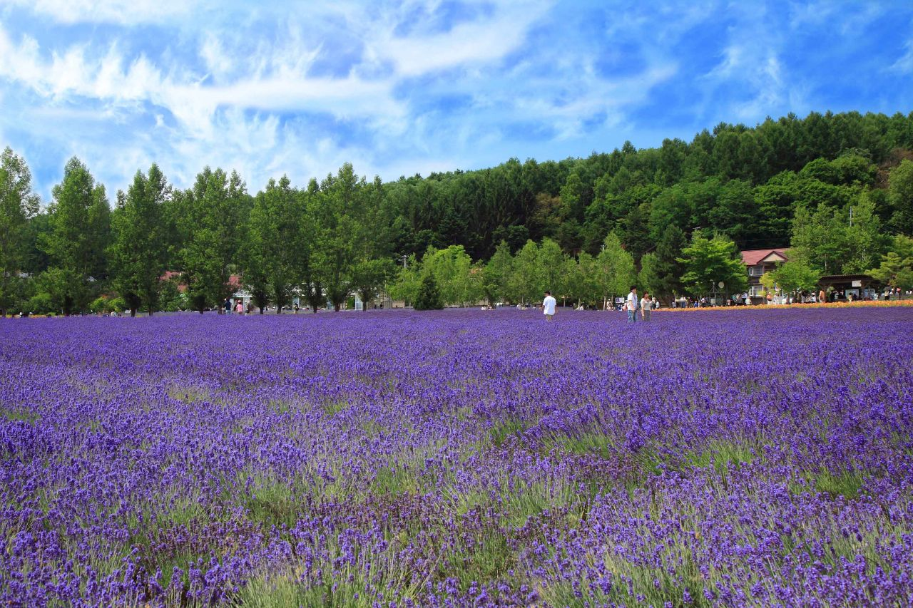

遊北海道-百花遊
 受大自然的恩赐，散落在北海道各地的蒸腾温泉以及秀丽奇特的大自然怀抱中进行各项户外运动、世界顶级雪量滑雪场,说到夏季的北海道，当然是花啦！蓝天白云下色彩斑斓的鲜花让人目不暇接
受大自然的恩赐，散落在北海道各地的蒸腾温泉以及秀丽奇特的大自然怀抱中进行各项户外运动、世界顶级雪量滑雪场,说到夏季的北海道，当然是花啦！蓝天白云下色彩斑斓的鲜花让人目不暇接
富田农场可以说是北海道的薰衣草名胜地了，每年夏季都会有许多国内外游客慕名到此。
薰衣草

以一片紫色的薰衣草田为主，约9公顷的花田平铺在丘陵上，色彩缤纷。参观线路上，有精油蒸馏、百花香、农场散步等11个以薰衣草为主题的展示小屋，游览这些小屋的同时还能参观花田。百花香、精油、香皂等伴手礼种类丰富，冰淇淋、可乐饼等美食也不少。虽然赏花季节人比较多，还是非常值得一去的。
位于小樽市的「SNOW CRUISE ONZE」，是可以眺望到石狩湾美景的人气滑雪场。在夏季的7、8月份作为「ONZE春香山百合园」开放，约50种计213万朵的百合盛开在滑雪场的斜面上。在这个北海道内具有相当规模的百合园里，根据区域不同种植着不同颜色和种类的百合，走在全长1,100m的游步道上可以尽情欣赏百合的美